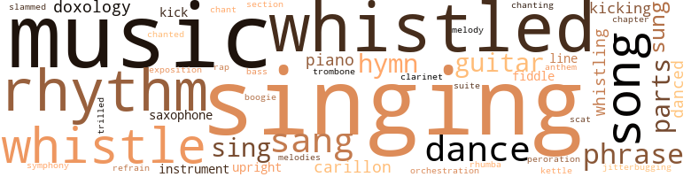
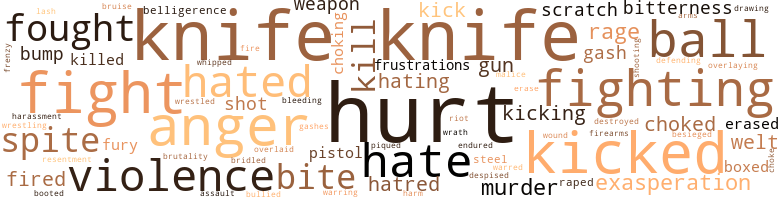
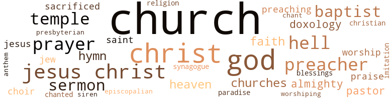

Taffy, by Kaye, Phillip B. (1950)
143 music-related terms matched in this text.
Most frequent terms in this topic: singing (13); music (12); whistled (10); rhythm (6); whistle (5)
bass.n.07
Definition: the member with the lowest range of a family of musical instruments
| word | sentence |
|---|---|
| bass | For five blocks around , from Putnam to Fulton , from Sumner to Patchen , hot piano , throaty trombone and wailing clarinet screeched , pumped and roared to the thunderous rhythmic boom of amplified bass fiddle . |
boogie.n.01
Definition: an instrumental version of the blues (especially for piano)
| word | sentence |
|---|---|
| boogie | It was something like wanting a cake and getting shoes at Christmas , or being blamed for putting boogie in the church 's chimes when he knew Paul Stone had done it , or bloodying Carl 's nose for calling him " nigger , " and having the cop and principal and even his father jump on him , while they let Carl go . |
carillon.n.01
Definition: set of bells hung in a bell tower
| word | sentence |
|---|---|
| carillon | The occasion was the presenting of the carillon chimes to the Rock of Ages Baptist Church on behalf of the Ladies Aid Society . |
| carillon | The carillon chimes , a record player and amplifying system hooked to four loud-speakers hung in the church tower , had been bought after a month 's drive by the ladies . |
| carillon | The ribbon from the pulpit to the tower where the carillon machine had been installed hung limp and motionless mid-air . |
chant.n.01
Definition: a repetitive song in which as many syllables as necessary are assigned to a single tone
| word | sentence |
|---|---|
| chant | Taffy shook himself to break the hold of the chant upon him , to keep from feeling gravel under his knees and the trembling wet of her twisted mouth and Lillian , whimpering yet thrusting herself at him . |
chapter.n.01
Definition: a subdivision of a written work; usually numbered and titled
| word | sentence |
|---|---|
| chapter | When we change the stone and put St. Simon 's name on it , I 'd like to leave the verse , except that it 's really the seventh chapter . |
clarinet.n.01
Definition: a single-reed instrument with a straight tube
| word | sentence |
|---|---|
| clarinet | For five blocks around , from Putnam to Fulton , from Sumner to Patchen , hot piano , throaty trombone and wailing clarinet screeched , pumped and roared to the thunderous rhythmic boom of amplified bass fiddle . |
dance.n.01
Definition: an artistic form of nonverbal communication
| word | sentence |
|---|---|
| dance | There seems to be some kind of misunderstanding about the dance . " |
| dance | He watched Geraldine and Paul Stone dance near by . |
| dance | " You promised me a dance . " |
dance.v.03
Definition: skip, leap, or move up and down or sideways
| word | sentence |
|---|---|
| dance | The girls did n't like to dance with him . |
| danced | He danced off with Geraldine Smith . |
| dance | He held out his hands and asked her if she would dance . |
| danced | She had not danced since she was a girl in high school before she married Reverend Stone , but in that instant of feeling tenderness and closeness , she did n't stop to think of the spectacle of the Episcopalian priest dancing with the wife of the Baptist minister . |
| danced | She danced . |
doxology.n.01
Definition: a hymn or verse in Christian liturgy glorifying God
| word | sentence |
|---|---|
| doxology | The organ played on and the choir finished singing the doxology . |
| doxology | " Oh God have mercy on us , " they replied , and the choir broke out into the doxology ; and the refreshed cries of the faithful , the " Aniens " of the ecstatic , and the full-voiced organ rolled up together . |
| doxology | After the doxology , the choir shifted over into " The Lord is my shepherd , I shall not want . " |
exposition.n.04
Definition: (music) the section of a movement (especially in sonata form) where the major musical themes first occur
| word | sentence |
|---|---|
| exposition | He unwound a long exposition of what the deacons and vestry board had done to make the meeting possible , as well as other community enterprises . |
guitar.n.01
Definition: a stringed instrument usually having six strings; played by strumming or plucking
| word | sentence |
|---|---|
| guitar | There , way over there , beneath the neon-tinted sky was 133rd Street and somebody sitting on a stoop strumming a guitar , singing not words but formless melody behind the shifting chords , broken by Mr. Bustamente 's chanting , easy laughter and the high-pitched giggle of a girl , who 's never done it , being made . |
| guitar | Eggie had two " fifths " of wine and Dude brought his guitar from across the hall . |
| guitar | Here was something different , a something simple tied together with the singing strings of the twanging guitar . |
| guitar | A guitar , saxophone , bass-fiddle , and drums were stacked behind them . |
hymn.n.01
Definition: a song of praise (to God or to a saint or to a nation)
| word | sentence |
|---|---|
| hymn | On the last verse of the hymn , the Ladies ' Aid Society marched in , wearing black serge dresses , white collars and cuffs , and white shoes and stockings . |
| hymn | The church had almost filled , and the choir ended the opening hymn with a full-voiced " Amen " and thundering organ . |
| hymn | After a closing hymn the five left together , Paul and Geraldine , Taffy , Lillian and Bill . |
| hymn | Mrs. Pegler hummed something under her breath that was part gospel hymn and part blues . |
| anthem | " Do n't you worry , Martha , " whispered Mrs. McIntosh during the singing of the national anthem . |
intonation.n.03
Definition: the act of singing in a monotonous tone
| word | sentence |
|---|---|
| chanting | There , way over there , beneath the neon-tinted sky was 133rd Street and somebody sitting on a stoop strumming a guitar , singing not words but formless melody behind the shifting chords , broken by Mr. Bustamente 's chanting , easy laughter and the high-pitched giggle of a girl , who 's never done it , being made . |
jitterbug.v.01
Definition: do the jitterbug
| word | sentence |
|---|---|
| jitterbugging | Why anyone would prefer to trail through the entire building , when there is an entrance right on Third Avenue , is - " She gasped , her popping eyes aimed at the middle of the floor , where the milling crowd was jamming back and forth , twisting and jitterbugging . |
kettle.n.04
Definition: a large hemispherical brass or copper percussion instrument with a drumhead that can be tuned by adjusting the tension on it
| word | sentence |
|---|---|
| kettle | Home , Martha set a pail of water and the tea kettle to boil . |
kick.v.04
Definition: kick a leg up
| word | sentence |
|---|---|
| kick | " We put a lot of time into the organization , Mrs. Johnson , " said Van Arsdale , blinking solemly , " And we ca n't kick over the bucket the first time we get caught in a political squeeze . |
| kicking | The conflict between running to the rescue and something of North Carolina and remembering white folks keeping her paralyzed while Elizabeth turned back on a boy , caught him by his shirt tail to swing him round and round until she tripped and stumbled to her knees , while the others swarmed in , kicking and hitting , a tall red-headed girl screaming laughter as she kicked at Elizabeth buried beneath four or five boys , the crowd dancing around , leaping up and down , laughing and shouting . |
| kick | Those get kicked around who ca n't find out quick enough who to kick first . |
| kicking | He lunged forward , kicking under the table with one foot . |
| kicking | He screamed out , kicking , rolling over on the floor . |
music.n.01
Definition: an artistic form of auditory communication incorporating instrumental or vocal tones in a structured and continuous manner
| word | sentence |
|---|---|
| music | Behind the closed apartment doors he heard the mumble of voices , the fixed wailing of a baby , muffled music and the guttural staccato of a radio newscaster . |
| music | He moved about , studiously oblivious of the religious cries of the faithful and the pealing music . |
| music | The quietness of the music brought the congregation back into the church . |
| music | As the music stopped , Reverend Stone returned to his seat . |
| music | " Stop the music ! |
| music | Stop the music ! " |
| music | The music did n't stop , but she reappeared the next moment herding two very red-faced white girls before her . |
| music | The music stopped . |
| music | He knew that if he had to feel Lillian 's Hat hard belly against him one more time and be jerked to and fro as she grabbed alter the music , he would puke . |
| music | The music beat on . |
| music | The little gray haired lady who sat on the front row rocked in rhythm with the music and patted her feet . |
| music | The best music leads the best way to God . |
musical_instrument.n.01
Definition: any of various devices or contrivances that can be used to produce musical tones or sounds
| word | sentence |
|---|---|
| instrument | the instrument . |
| instrument | And I thought - " He had been silent a much longer time , bobbing his head wordlessly to the black instrument . |
orchestration.n.01
Definition: an arrangement of a piece of music for performance by an orchestra or band
| word | sentence |
|---|---|
| orchestration | He called in the organ and the choir , using his voice , the choir , the congregation , the organ , the dramatics of gesture in a symphonic orchestration of religious rapture . |
part.n.11
Definition: the melody carried by a particular voice or instrument in polyphonic music
| word | sentence |
|---|---|
| parts | There are eight parts of speech . |
| parts | Now the eight parts of speech - " He chewed his lip glumly . |
| parts | Eight parts of speech ! |
| parts | What are the eight parts of speech ? " |
peroration.n.02
Definition: (rhetoric) the concluding section of an oration
| word | sentence |
|---|---|
| peroration | By 10:00 p.m. , when she read her fiery peroration , there were fewer than sixty persons in the place . |
phrase.n.02
Definition: a short musical passage
| word | sentence |
|---|---|
| phrase | Taffy had nothing with which to phrase what he felt . |
| phrase | Mrs. Kromer admired the way in which she picked up the phrase without any shade of comment on Mrs. Pegler . |
| phrases | Walking across town , they passed other bars , each with its quota of nighttime potentates , but for all the grandeur of their drapes , and conked and gassed-up hair , their clipped phrases , knowing laughter , Taffy knew that in the daylight they were porters , janitors , building superintendents , redcaps , waiters , longshoremen , helpers , shipping clerks , domestics , errand boys and public flunkies . |
| phrase | She recalled his phrase and hoped that he remembered it . |
| phrase | How could she phrase what she wanted to say ? |
piano.n.01
Definition: a keyboard instrument that is played by depressing keys that cause hammers to strike tuned strings and produce sounds
| word | sentence |
|---|---|
| piano | For five blocks around , from Putnam to Fulton , from Sumner to Patchen , hot piano , throaty trombone and wailing clarinet screeched , pumped and roared to the thunderous rhythmic boom of amplified bass fiddle . |
| piano | But I would n't trust those women any further than you can kick that there piano . " |
| piano | Can I play the piano ? " |
rap.n.05
Definition: genre of African-American music of the 1980s and 1990s in which rhyming lyrics are chanted to a musical accompaniment; several forms of rap have emerged
| word | sentence |
|---|---|
| rap | Got pinched on a burglary rap . |
refrain.n.01
Definition: the part of a song where a soloist is joined by a group of singers
| word | sentence |
|---|---|
| refrain | " The stardust memory Of love 's refrain ! " |
rhythm.n.04
Definition: the arrangement of spoken words alternating stressed and unstressed elements
| word | sentence |
|---|---|
| rhythm | He did n't break the rhythm of the two flying brushes . |
| rhythm | His head cocked to one side , he seemed to be appreciating the rhumba rhythm and popping of the shine rag . |
| rhythm | The big woman clasped her hands across her middle and jiggled her fat breasts up and down to their rhythm . |
| rhythm | He moved with a poised rhythm as though practicing each position . |
| rhythm | And the motor was raced and raced again , until it vibrated with a rhythm that seemed to rattle the world . |
| rhythm | The little gray haired lady who sat on the front row rocked in rhythm with the music and patted her feet . |
| rhythms | Or could one 's pulse beat the anxiety into rhythms that pounded until the ears were full ? |
rumba.n.01
Definition: syncopated music in duple time for dancing the rumba
| word | sentence |
|---|---|
| rhumba | His head cocked to one side , he seemed to be appreciating the rhumba rhythm and popping of the shine rag . |
sax.n.02
Definition: a single-reed woodwind with a conical bore
| word | sentence |
|---|---|
| saxophones | " Sometimes I wonder why I spend the lonely nights , Dreaming of a song - " The saxophones moaned . |
| saxophone | A guitar , saxophone , bass-fiddle , and drums were stacked behind them . |
scat.n.01
Definition: singing jazz; the singer substitutes nonsense syllables for the words of the song and tries to sound like a musical instrument
| word | sentence |
|---|---|
| scat | Mrs. Winston-Hoyte , seizing the " Purple Donkey , " dropped into Martha 's scat on the other side of Mrs. McIntosh . |
section.n.01
Definition: a self-contained part of a larger composition (written or musical)
| word | sentence |
|---|---|
| section | He sank down in the seat next to Eggie in the smoking section of the dank air-conditioned darkness of the movie , dimly saw part of the show ; and next , an usher was shaking him roughly . |
sing.v.02
Definition: produce tones with the voice
| word | sentence |
|---|---|
| sung | " Bloodied Carl 's nose ! " had sung within him , and the sight of the slight scarlet trickle had sent something shooting off into space and he plunged forward with a windmill attack . |
| sang | Across the street , Mr. Bustamente , the tailor , sang in a nasal off-key . |
| sung | The people stood for the Negro National Anthem which was sung absent-mindedly ; only a few knew even part of the words . |
| sang | After they filled his glass the third time , he joined the singing , uneasily at first , but when no one seemed to care if he sang or not , he sang louder . |
| sang | After they filled his glass the third time , he joined the singing , uneasily at first , but when no one seemed to care if he sang or not , he sang louder . |
| sing | " We sing just for Jesus ' sake . |
| sang | There ai n't no love . . . " sang a radio across the courtyard . |
| sings | " He sings in the choir . " |
| sing | She asked everyone to stand and to sing the Star Spangled Banner , and as she led the singing , Martha saw Dr. Finger and Mr. Van Arsdale come in and sit in the last row on the left . |
| sings | He sings in the choir , and he works on the docks . " |
| sung | She had started walking again , but because the sharp wind nipped his cheeks and it would be Christmas when they got home and he was glad to be with her , he had sung a little song : " There was a little bee , He was as happy as can be ; He lived in a tree In a beehive - " Funny , to remember just that , after so much else . |
| sang | They sang old songs : " I 'll Be Loving You , " " Always , " " Old Black Joe , " " Blue Skies , " " Moon Glow , " " Street of Dreams , " " Swanee River , " " Blue Heaven , " " Star Dust , " " Sweet Adeline , " " Ezekial Saw the Wheel , " " Sweetheart of Sigma Chi , " " Let My People Go , " " Indian Love Call , " " St. Louis Blues , " and " Stormy Weather . " |
singing.n.01
Definition: the act of singing vocal music
| word | sentence |
|---|---|
| singing | There , way over there , beneath the neon-tinted sky was 133rd Street and somebody sitting on a stoop strumming a guitar , singing not words but formless melody behind the shifting chords , broken by Mr. Bustamente 's chanting , easy laughter and the high-pitched giggle of a girl , who 's never done it , being made . |
| singing | The organ played on and the choir finished singing the doxology . |
| singing | The girl who spoke spoke very low , almost in a singing tone that asked a million questions . |
| singing | After they filled his glass the third time , he joined the singing , uneasily at first , but when no one seemed to care if he sang or not , he sang louder . |
| singing | Here was something different , a something simple tied together with the singing strings of the twanging guitar . |
| singing | " I did n't know you were so interested in singing . " |
| singing | That damned radio , singing like that . |
| singing | Only the wheezing of Eggie , a faraway laugh , deep and easy , the grinding of gears of cars starting , a feeble honk of a car disappearing behind the singing in his head , the buzzing in his ears . |
| singing | She asked everyone to stand and to sing the Star Spangled Banner , and as she led the singing , Martha saw Dr. Finger and Mr. Van Arsdale come in and sit in the last row on the left . |
| singing | " Do n't you worry , Martha , " whispered Mrs. McIntosh during the singing of the national anthem . |
| singing | Before the singing was finished , Reverend Stone clumped heavily down the aisle . |
| singing | Dude led them in singing . |
| singing | Their plaintive harmonies imposed a monotonous kinship upon the melodies , until it was as though the songs flowed from one to the other in an organic whole through which searching cords pulsed from one vein to the next , giving life to the group as a whole , giving and taking in the embrace of singing . |
slam_dance.v.01
Definition: dance the slam dance
| word | sentence |
|---|---|
| slammed | She slammed herself down at her desk and tapped rapidly with her pencil . |
song.n.01
Definition: a short musical composition with words
| word | sentence |
|---|---|
| song | " Sometimes I wonder why I spend the lonely nights , Dreaming of a song - " The saxophones moaned . |
| song | " Just one more song , Crip . " |
| song | She had started walking again , but because the sharp wind nipped his cheeks and it would be Christmas when they got home and he was glad to be with her , he had sung a little song : " There was a little bee , He was as happy as can be ; He lived in a tree In a beehive - " Funny , to remember just that , after so much else . |
| song | Because he had n't finished his song ; his mother had stopped , and while people stopped and stared , she had knelt in the snow and gathered him to her and kissed him . |
| songs | They sang old songs : " I 'll Be Loving You , " " Always , " " Old Black Joe , " " Blue Skies , " " Moon Glow , " " Street of Dreams , " " Swanee River , " " Blue Heaven , " " Star Dust , " " Sweet Adeline , " " Ezekial Saw the Wheel , " " Sweetheart of Sigma Chi , " " Let My People Go , " " Indian Love Call , " " St. Louis Blues , " and " Stormy Weather . " |
| songs | Their plaintive harmonies imposed a monotonous kinship upon the melodies , until it was as though the songs flowed from one to the other in an organic whole through which searching cords pulsed from one vein to the next , giving life to the group as a whole , giving and taking in the embrace of singing . |
suite.n.01
Definition: a musical composition of several movements only loosely connected
| word | sentence |
|---|---|
| suite | For in the dining room , a suite of graceful mahogany filled what had been empty space , with a gray rug , yellow drapes , and white curtains . |
symphony.n.01
Definition: a long and complex sonata for symphony orchestra
| word | sentence |
|---|---|
| symphony | Not the melting pot , but the symphony in which each part holds its distinctiveness . |
tone.v.01
Definition: utter monotonously and repetitively and rhythmically
| word | sentence |
|---|---|
| chanted | So true ! " chanted the congregation . |
trombone.n.01
Definition: a brass instrument consisting of a long tube whose length can be varied by a U-shaped slide
| word | sentence |
|---|---|
| trombone | For five blocks around , from Putnam to Fulton , from Sumner to Patchen , hot piano , throaty trombone and wailing clarinet screeched , pumped and roared to the thunderous rhythmic boom of amplified bass fiddle . |
tune.n.01
Definition: a succession of notes forming a distinctive sequence
| word | sentence |
|---|---|
| melody | There , way over there , beneath the neon-tinted sky was 133rd Street and somebody sitting on a stoop strumming a guitar , singing not words but formless melody behind the shifting chords , broken by Mr. Bustamente 's chanting , easy laughter and the high-pitched giggle of a girl , who 's never done it , being made . |
| line | " Oh line . |
| line | Site had persuaded Mrs. McIntosh to organize a receiving line , and all through the scorching afternoon she had shaken hands with young men , old women , children , beauticians , domestics , porters , chauffeurs , firemen , civil service clerks , dining car waiters , longshoremen , housewives , shipping clerks , social workers , ministers , until the steady stream of people had flattened out into an undifferentiated flow of brown , yellow and black ( and there were two white women from the Y.W.C.A. ) . |
| melodies | Their plaintive harmonies imposed a monotonous kinship upon the melodies , until it was as though the songs flowed from one to the other in an organic whole through which searching cords pulsed from one vein to the next , giving life to the group as a whole , giving and taking in the embrace of singing . |
upright.n.02
Definition: a piano with a vertical sounding board
| word | sentence |
|---|---|
| upright | He cried out , and the sound of his own voice brought him bolt upright in bed . |
| upright | Martha sat bolt upright . |
violin.n.01
Definition: bowed stringed instrument that is the highest member of the violin family; this instrument has four strings and a hollow body and an unfretted fingerboard and is played with a bow
| word | sentence |
|---|---|
| fiddle | For five blocks around , from Putnam to Fulton , from Sumner to Patchen , hot piano , throaty trombone and wailing clarinet screeched , pumped and roared to the thunderous rhythmic boom of amplified bass fiddle . |
| fiddle | The radio man followed them and went to a table below the rostrum to fiddle with the apparatus , which he had apparently set up earlier . |
warble.v.01
Definition: sing or play with trills, alternating with the half note above or below
| word | sentence |
|---|---|
| trilled | " She " had trilled . |
whistle.n.01
Definition: the sound made by something moving rapidly or by steam coming out of a small aperture
| word | sentence |
|---|---|
| whistles | Ferries had swum backward and forward sluggishly , their hollow whistles matching his feeling of emptiness and fear . |
whistle.v.01
Definition: make whistling sounds
| word | sentence |
|---|---|
| whistle | A whippoorwill whistle , sharp and commanding , slit through Bill 's open-mouthed unformed hopes . |
| whistling | Taffy was whistling at some upper story in the building . |
| whistled | Taffy whistled again . |
| whistling | " What the hell you whistling out there for ? |
| whistled | Come on up I " Then the one in the window whistled , long and loud . |
| whistled | Bill watched a look of twisted amusement unscrew itself as he whistled again . |
| whistle | A distant whistle pierced Taffy 's fantasy . |
| whistle | He heard the whistle again , and he dashed for the door . |
| whistled | The pokey-man , beside his ornate wheelbarrow of towel-wrapped ice , leaned on his multi-colored bottles of sugar water to swap words with the fresh dam man ; while up the street , the peanut stand whistled , and the sweet-potato oven offered fragrant memories of cotton patches and rice fields in the Carolinas to those who had long forgotten anything of them . |
| whistle | They waited tensely until the whispered whistle answered from above . |
| whistled | Taffy stopped at the head of the stairs and whistled softly . |
| whistled | Taffy whistled again . |
| whistled | A hysterical impulse to run , to beat it anywhere , was straining at him when Dude whistled all-clear below . |
| whistled | Eggie cracked it open and whistled . |
| whistled | The club whistled through the air . |
| whistled | O'Flaherty whistled " The Last Rose of Summer " softly between his teeth . |
| whistling | O'Flaherty went back to whistling through his teeth . |
| whistle | O'Flaherty blew on his whistle while he cursed to himself and peered into the moon-spotted shadows . |
327 violence-related terms matched in this text.
Most frequent terms in this topic: knife (44); hurt (34); kicked (16); anger (15); fight (14)
abrasion.n.01
Definition: an abraded area where the skin is torn or worn off
| word | sentence |
|---|---|
| scratch | That ai n't such a healthy-looking scratch , " he lisped solicitously . |
| scratch | The ugly scratch crinkled and crawled like a live thing . |
| scratch | The long scratch crawled as Taffy worked his mouth . |
aggravation.n.01
Definition: an exasperated feeling of annoyance
| word | sentence |
|---|---|
| exasperation | Her voice was already impatient with exasperation . |
| exasperation | She reigned back a familiar exasperation at the sullen secretiveness he always seemed to wear . |
| exasperation | Martha felt a prickly exasperation rise . |
| exasperation | Martha remembered bitterly the hopeless exasperation of the little gnomelike photographer who had tried to get Mrs. Winston-Hoyte out of the picture . |
| exasperation | Panting and swearing to himself in exasperation , O'Flaherty thundered after him . |
anger.n.01
Definition: a strong emotion; a feeling that is oriented toward some real or supposed grievance
| word | sentence |
|---|---|
| anger | His mother was coming upstairs ; and the sound of her slow steps prodded up an eager anger . |
| anger | She had closed her eyes for a moment to bite back her anger . |
| anger | He felt his anger rekindling . |
| anger | And then the memory faded and there was nothing left in between but that vague uneasiness that smothered anger which never had anything at which to rebel , except something which was n't there . |
| anger | He felt pimples of anger and something else start up all over his body . |
| anger | I never get to see you , and - " An unbidden anger was crowding him into being blunt . |
| anger | His bloody features showed no fear or anger - only blank patience . |
| anger | Taffy felt his anger balloon into being . |
| anger | He had been the first boy Taffy had ever seen who had knappy eyelashes , crinkling crisply , peculiarly prettifying decorations set in an otherwise cruelty-creased face , normally stonily immobile except when anger quivered his nostrils . |
| anger | Fear and anger snarled his features into a defensive knot in the dim orange of the hallway light . |
| anger | His anger at the blankness struck out . |
| anger | His anger at her rebellion had been in grotesque contrast with the ugly , drooping garment . |
| anger | And he hated this feeling , the way he was and the wave of anger that tore through him . |
| anger | He rode for a while in frustrated anger , inwardly lacerating himself until he felt exhausted and stopped chewing at his thumb and was able to get his breath . |
| anger | Sam felt himself flushing in anger . |
belligerence.n.01
Definition: hostile or warlike attitude or nature
| word | sentence |
|---|---|
| belligerence | " Well , you ai n't home very much - " She flushed at his belligerence , but she decided she should try to make peace . |
| belligerence | Mrs. Pegler was huskily breathy with belligerence . |
besiege.v.01
Definition: surround so as to force to give up
| word | sentence |
|---|---|
| besieged | He tiptoed back to Homer and Eggie who were hardly visible as they squatted together in the darkness of the doorway of the besieged apartment . |
bleeding.n.01
Definition: the flow of blood from a ruptured blood vessel
| word | sentence |
|---|---|
| bleeding | The bleeding had stopped . |
boot.v.01
Definition: kick; give a boot to
| word | sentence |
|---|---|
| booted | lie booted him back flat on his back with a heavy kick . |
box.v.03
Definition: engage in a boxing match
| word | sentence |
|---|---|
| boxed | If the child , feels boxed in , defeated , then you are storing up terror for an explosion later on . " |
| boxed | Except that now it was Martha who was boxed behind an inpenetrable wall of babble . |
bridle.v.01
Definition: anger or take offense
| word | sentence |
|---|---|
| bridled | She bridled and put out an arched hand at arm 's length . |
bruise.n.01
Definition: an injury that doesn't break the skin but results in some discoloration
| word | sentence |
|---|---|
| bruise | His mouth , slightly too full and girlish , hung loose and flaccid , the ruby bruise from the pool table making an angry lump . |
bump.n.01
Definition: a lump on the body caused by a blow
| word | sentence |
|---|---|
| bump | Strident voices , harsh noises , and glaring light cut across at noon ; but at twilight life has slowed to the muffled bump of a grinding juke box . |
| bump | He had not heard a sound outside , but inside a juke box vibrated softly with a mellow bump . |
| bump | Christ if he could just - " A rough bump jarred his eyes open . |
contemn.v.01
Definition: look down on with disdain
| word | sentence |
|---|---|
| despised | And , honey , one frien ' ain ' nothin ' to be despised when you got trouble . " |
craze.n.02
Definition: state of violent mental agitation
| word | sentence |
|---|---|
| frenzy | Only , the big laughs , the shrieks of high-pitched frenzy or pain seem saved to go with taxis whose horns are quiet while the driver drowses waiting for the shade on the south side of the street to reach him . |
cut.n.05
Definition: a wound made by cutting
| word | sentence |
|---|---|
| gash | Blood , oozing from a gash on the other cheek , cut a crooked path through the ashes and sweat . |
| gashes | The blood dripped faster as the gashes in his eyebrow and cheek gaped open . |
| gash | The split stick gouged a crooked gash into his face , but he hardly felt its slash . |
| gash | A thin line of blood traced the gash across his cheek and dripped down to make a crooked track across his chin . |
destroy.v.04
Definition: put (an animal) to death
| word | sentence |
|---|---|
| destroyed | Pain and sparks destroyed his last strange sensation and there was only hurt , and suddenly fear . |
draw.v.23
Definition: pull (a person) apart with four horses tied to his extremities, so as to execute him
| word | sentence |
|---|---|
| drawing | He started toward her again , winking at little Geraldine Smith , who winked back , drawing up a shoulder and arching an eyebrow . |
erase.v.01
Definition: remove from memory or existence
| word | sentence |
|---|---|
| erase | That was a helluva answer ; so he tried to close his mind , to rub and erase , not to have anything inside or outside . |
| erased | When he felt that the last of something unpleasant had been completely erased , he swaggered down the stoop steps . |
| erased | The bitter line is erased and only sparkling eyes above a sharply curving cheek freely offer a forbidden invitation to alien ecstasy . |
ferociousness.n.01
Definition: the trait of extreme cruelty
| word | sentence |
|---|---|
| brutality | Maybe he would tell her about his gang , of the brutality of Ralph , and the cunning of Eggie , and the sharpness of Dude and the strength of Homer , and of how they did whatever he said . |
fight.n.02
Definition: the act of fighting; any contest or struggle
| word | sentence |
|---|---|
| fighting | " Why - You dirty bitch - " He had raised his hands uncertainly , almost in a fighting pose . |
fight.n.05
Definition: a boxing or wrestling match
| word | sentence |
|---|---|
| fight | Would there be another family fight ? |
| fight | What do you mean coming in here picking on our children and starting a fight ? |
| fight | He had let go because he felt angry in a strange way and hurt that his victory in the fight had been ignored . |
| fight | " Well , he doubled up , screaming bloody murder and holding his guts , and no more fight left in him than a jackrabbit . " |
| fight | The fight hysteria that had charged the air wore off and left the normal stench of stale cigarette smoke and smell of tired workmen , burning up boredom in petty gambling . |
fight.v.02
Definition: fight against or resist strongly
| word | sentence |
|---|---|
| fight | Why must they fight today ? |
| fighting | I try to keep them from fighting , but the cop said - " He had held the telephone to his chest , the mouthpiece jammed to his face . |
| fighting | You ca n't do it fighting . |
| fight | Paul twisted away from his father and said , " He got mad because somebody kicked his hat , and he started to fight . " |
| fighting | " He was fighting my son , " explained the Reverend Stone belligerently , and added abruptly , " Awfully sorry , Mrs. Johnson . |
| fighting | Bill had seen the picture before when it had played at the Paramount on Broadway ; but now , wedged between Homer and Eggie , fighting against winey drowsiness and trying to smoke a cigarette , he enjoyed it more . |
| fought | And when she field her head to one side and combed and shook and stroked until her hair was glistening again , he suddenly wished he had fought , and that there had been a knife , and he felt the power with which he drove it into the hulk - of them . |
| fighting | A radiator whispered softly and the room was warm , and for the first time the diaphonous empty silence of Brooklyn rooms seemed peaceful and not like fighting falling in a dream . |
| fighting | He was fighting to hold their content . |
| fighting | He could hardly see the house next door for the tears fighting to blind his eyes . |
| fought | She fought breathlessly to regain control of herself , holding her lips away from his smiling , seeking face , for she knew that that would be the end . |
| fighting | Ministers do n't like the Y.W.C.A. , and they 're always fighting against us . |
| fought | They fought wordlessly - grunting , slugging , burying fists in belly , sides , face or head . |
| fought | Before , he had fought freely , making small attempt at defending himself ; but now , he was all caution . |
| defending | Before , he had fought freely , making small attempt at defending himself ; but now , he was all caution . |
| fight | " You wan na fight wilh mama ? " she had panted . |
| fight | Do you wan na fight ? |
| fought | The BOOK TWO 1 Reverend Mr. Cobalt slept more dreamlessly than he had for many a night because Mrs. Stone had put a merciful period to something which he had fought helplessly to stop , over which his flesh had conquered him again and again until he had been on the verge of spiritual hysteria . |
| fights | He 'll just change the way he fights and try to talk ' sweet , ' hopin ' if he 's sweet enough we 'll stop sluggin ' so goddamned hard . |
| fighting | I would n't get sick about it just because a lot of old hens got to fighting with each other and made damn fools out of theyselves . |
| fight | He ran downstairs to flee what burned within him , trying to fight his inner fire with the reflected heat of the sun on the sidewalks . |
| fighting | " I 'm used to fighting uphill . |
| fight | I know what it means to fight alone . |
| fighting | He pulled them apart as though they were two children fighting . |
| fought | He fought to make his eyes stay open , to beat back a leaden desire just to slide down and let go , even if he was in the street . |
| fought | Ralph Redmond , who bullied , who stole , who fought - and who had , in one fantastic incident , been raped by Frazzles ; but who had finally been sent to the Reformatory because he stabbed the " Super " when his mother had caught Frazzles lying with " Super , " and had driven Frazzles out into the snow naked , except for shoes and stockings . |
| Fight | Fight the world outside . |
| fought | The lead sergeant swore to himself as he fought his way forward . |
| fight | I do n't fight the union . |
| fight | While the truck rumbled up Amsterdam , he was again smaller and frightened , but bitterly determined ; and he recalled how he had been torn between his plan of attack and an insistent hope - " Maybe he 's not going to fight me any more . " |
| fight | He remembered hoping again he was n't going to have to fight . |
firearm.n.01
Definition: a portable gun
| word | sentence |
|---|---|
| firearms | He 'll call out the hounds and let loose with the family firearms . " |
frustration.n.03
Definition: a feeling of annoyance at being hindered or criticized
| word | sentence |
|---|---|
| frustrations | She was used to hearing married men explain their frustrations . |
| frustrations | She created a reversed moment when all twisted failures and frustrations of life were thrown back in the face of the world . |
fury.n.01
Definition: a feeling of intense anger
| word | sentence |
|---|---|
| fury | Taffy beat in a paroxysm of frenzied fury . |
| rage | She gripped the arms of her chair , but the tremor of her inner rage showed in spite of herself . |
| rage | His skin crawled with rage , his hair rising . |
| rage | He jumped to his feet , quivering with rage . |
| fury | Ralph balanced his two-hundred-odd frame lightly and bent to one side to let the whirling fury of Taffy stumble past . |
| rage | She tossed her head in triumph at the image of her father trembling in rage at the foot of the stairs between the kitchen and the living room . |
| Rage | Rage had blanked out fear , and with two clenched hands outstretched , he flung himself on Carl . |
gag.v.06
Definition: cause to retch or choke
| word | sentence |
|---|---|
| choked | The heat from the roof had choked him with the odor of tar . |
| choked | Her heart throbbed , her throat choked , and whereas she had meant to speak in a quiet , calm , easy voice , she knew that if she did not speak soon , she would break down and cry . |
| choking | I 'm choking for a slug of something . " |
| choked | He choked back a cry . |
| choked | Someone laughed nervously , and then choked it off . |
| choke | " I ought to choke you , you little bastard . |
| choking | The agent stiffened , making a choking grunting noise of surprise , his raised hands twitching . |
gun.n.01
Definition: a weapon that discharges a missile at high velocity (especially from a metal tube or barrel)
| word | sentence |
|---|---|
| gun | Flynn leaped from behind the wheel and dashed around the car , waving his gun and shouting , " All right there , hold up . |
| gun | As an afterthought , he added , " Do n't be too damned fast with your gun . " |
| gun | Elizabeth , beside her , almost fell backwards when Flynn waved his gun in her face and shouted , " Stay in the house . |
| gun | Before he could say anything else , Flynn jumped from the slowly moving car , waving his gun and shouting wildly , " Halt ! |
harassment.n.01
Definition: a feeling of intense annoyance caused by being tormented
| word | sentence |
|---|---|
| harassment | She could now enjoy the anxious harassment with which Father Cobalt had said , " I really do n't get the ' brick ' idea . " |
hate.n.01
Definition: the emotion of intense dislike; a feeling of dislike so strong that it demands action
| word | sentence |
|---|---|
| hate | Taffy , still beating , threw himself on top of him , pounding at the fear and hate that had ridden him . |
| hatred | She was trying to focus her eyes on Stoney and to show friendliness ; but something of pain , or exhaustion , or hatred , or hunger , was twisting her face , still rouged a startling red on one cheek . |
| hatred | The full flavor was strong upon her , the hatred of the long dreary years of saving that had made the block look uglier and uglier while Tom kept mumbling in some kind of blind hope , " Only until something breaks . |
| hate | His thin hands gripped the stick ; he writhed in a spasm of hate and panting desire . |
| hatred | He glared his hatred at Ralph . |
| hate | He licked his lips sensuously as though he enjoyed sharing the outburst of hate and violence . |
| Hatred | Hatred smeared out the pattern of his mind in a blur that hardly knew his head was pounding again , beating , aching , like a thing apart . |
hate.v.01
Definition: dislike intensely; feel antipathy or aversion towards
| word | sentence |
|---|---|
| hating | Over his shoulder Taffy had seen Carl weeping wildly into the drooping bosom of a large blond woman who was trying to wipe his bloody nose , and now there were roses trailing over a fence and the man on the sidewalk was pushing at Taffy who was hating himself because he had again let the man get away . |
| hated | She stank , and her pleading , her helplessness , was something violently opposed to being a woman as he had known it in his mother 's bitter hardness - it was something which mirrored his own helplessness , a caricature he hated . |
| hated | He hated Eggie 's fumbling fingers . |
| hated | He looked so patiently pleading , so frightened , she hated him and wanted to scratch at his wide staring eyes . |
| hated | He hated the image of his father bobbing his head and saying , " Yes sir . |
| hated | He hated the eagerness that broke through the flat mask of her sallow olive face ; and then she was against him , surprisingly hot of body , moist-lipped , shooting a picture of Eggie grappling with him across his mind . |
| hate | I hate you . |
| hate | I hate you . |
| hate | I hate you , your house , your dirty stinking puling brats . |
| hate | I hate all of you ! |
| hated | And Taffy full of shame and limpness had seen himself and them and hated himself . |
| hated | She had heard that whining squeak so regularly that she hated not only Alice Brown but also the three rebellious-looking and rumpled boys who passed for the boys ' choir in the front pew . |
| hate | The indecision , because what can one do but hate and be afraid and clench empty fists with three-way anguish , while watching Mrs. Finkelstein , short and fat , waddle into the melee with swinging hands until they had scattered and she had picked her up , Elizabeth , Martha 's child , to mother her to her , to her bosom , and wipe her face - while nothing but shame remained that was accused in the silence when Elizabeth neither whimpered nor cried as the cut on her head was being doctored with iodine . |
| hating | Now , just heat and slow hating of the dragging seconds , each refusing to give relief from the drip of failure wearing away at her . |
| hating | The feeling of lying in a dark alcove , of being heavy with an unwanted pregnancy , of no-job sickness , the memory of hating , waiting for Miss Codrington to come . |
| hated | She hated the lie the next instant , but she simply could n't go into a long discussion now . |
| hate | This was too far away to be his hurt , and yet was it so far when he could hate himself at the same time ? |
| hate | " I 'd hate to take this drive just for nothing . " |
| hating | He had lived so long hating " home " it startled him to realize that here was a beauty and quiet the past had kept closed . |
| hated | And he hated this feeling , the way he was and the wave of anger that tore through him . |
hurt.v.04
Definition: cause damage or affect negatively
| word | sentence |
|---|---|
| hurt | Black girls he had known - resentful of being black , flaunting their color and crooked fried hair as insults - spindly thighs , hot and animally , under a stair , or while the gravel hurt under your knees and others watched the world come apart in the middle of your back . |
| hurt | Maybe he was n't really hurt bad . |
injury.n.01
Definition: any physical damage to the body caused by violence or accident or fracture etc.
| word | sentence |
|---|---|
| hurt | The knotted hurt in his chest was flattened out a bit . |
| hurt | He had felt quiet and safe , without any hurt , and he had wanted to leap up and to shout , to throw his arms about them and to kiss them . |
| hurt | Taffy 's arm hurt as if it were coming out by the roots . |
| hurt | He had let go because he felt angry in a strange way and hurt that his victory in the fight had been ignored . |
| hurt | But you have borne us up - " He hunched his shoulders because his back hurt . |
| harm | " ai n't no harm in tryin ' . |
| hurt | It seemed to mute down his jangling nerves , and Crip 's solicitude was as if someone had smoothed a salve over his hurt . |
| hurt | " They ai n't no better time than ' right now ' to get smart , sonny , if you just don ' get scared yo ' se ' f or start havin ' you ' feelin 's hurt because when you scratch the grin off a white man , you sec lie 's cold afeered unnerneath . " |
| hurt | His success had helped him to relax and to ease the hurt of the tightness in his back . |
| hurt | This was too far away to be his hurt , and yet was it so far when he could hate himself at the same time ? |
| hurt | His neck hurt . |
| hurt | Taffy 's body hurt from Lady 's beating and his stomach felt tight and drawn . |
| hurt | His leg hurt . |
| hurt | His side hurt . |
| hurt | He closed his eyes , holding his breath while the cool fingers of water caressed his hurt , smoothed his forehead and shrank his ache . |
| hurt | The quiet that came with the coldness was the calm of a walk on a New Year 's Eve long ago when they had lived on 99th Street and the snow had squeaked under their shoes as he had clung to the hem of her coat , glad to be stumbling along beside her through the swirling blizzard , glad that the dreary lonesome wait in the deserted hallway was over , glad that he could escape , without any final hurt , laughing people who hollered at him , but with something in their voices he could n't then understand until he had asked " Mama , what 's a nigger ? " |
| hurt | There would be a whisper in the wisteria over the porch , and the fragrance of the honeysuckle across the street hurt like a tight embrace . |
| hurt | It was sweet to dissolve the gritty edges of her jagged hurt , to let the tears pour out to give room for feeling in her distended pain . |
| hurt | If your hurt is so big it does n't let you see , then you can forgive my blindness . |
| hurt | Taffy 's eye hurt , but he clenched his fists and moved about cautiously . |
kick.v.04
Definition: kick a leg up
| word | sentence |
|---|---|
| kick | " We put a lot of time into the organization , Mrs. Johnson , " said Van Arsdale , blinking solemly , " And we ca n't kick over the bucket the first time we get caught in a political squeeze . |
| kicking | The conflict between running to the rescue and something of North Carolina and remembering white folks keeping her paralyzed while Elizabeth turned back on a boy , caught him by his shirt tail to swing him round and round until she tripped and stumbled to her knees , while the others swarmed in , kicking and hitting , a tall red-headed girl screaming laughter as she kicked at Elizabeth buried beneath four or five boys , the crowd dancing around , leaping up and down , laughing and shouting . |
| kick | Those get kicked around who ca n't find out quick enough who to kick first . |
| kicking | He lunged forward , kicking under the table with one foot . |
| kicking | He screamed out , kicking , rolling over on the floor . |
kick_back.v.02
Definition: spring back, as from a forceful thrust
| word | sentence |
|---|---|
| kicked | Could he be kicked out ? |
| kicked | Someone kicked it . |
| kicked | Paul twisted away from his father and said , " He got mad because somebody kicked his hat , and he started to fight . " |
| kick | " He did n't have to kick my hat , " Taffy mumbled , returning to staring out the subway window at the swift flying post-ribbed darkness . |
| kicked | When Eggie tried to scramble to his feet , he kicked him in the chest , back among the spilled ashes and cans . |
| kicked | The boy kicked at his crotch . |
| kicked | She hit him so hard my teeth hurt ; and when he bounced off the wall , she kicked him in the balls . |
| kicked | The conflict between running to the rescue and something of North Carolina and remembering white folks keeping her paralyzed while Elizabeth turned back on a boy , caught him by his shirt tail to swing him round and round until she tripped and stumbled to her knees , while the others swarmed in , kicking and hitting , a tall red-headed girl screaming laughter as she kicked at Elizabeth buried beneath four or five boys , the crowd dancing around , leaping up and down , laughing and shouting . |
| kicks | I 've had them all coining to me complaining about how the world kicks them around . |
| kicked | The baby kicked and squirmed at being so squeezed . |
| kicked | She wiggled and kicked at him , but went on reading her book . |
| kicked | The baby squirmed and kicked again at being held to one side . |
| kicked | Taffy kicked the door closed and threw his hat into the corner . |
| kicked | He kicked it again , and again . |
| kicked | He kicked out , flinging the cur against the side of the opposite pool table . |
| kicking | He dropped the stick , kicking it out of the way . |
| kicked | He kicked it to one side . |
| kicked | In one move , Mamie stood up , kicked out , and slapped with both hands . |
| kicked | Taffy had hesitated in irresolute panic for an instant ; and then above the roar of the blood pounding in his ears he had remembered Elizabeth lying in the gutter while a gang shrieked and laughed and kicked at her while he cried helplessly halfway up the block ; recalled racing for 99th Street while " nigger , nigger , nigger " was screamed after him , felt his arm twisted , his hair pulled , being hit . |
kill.v.10
Definition: cause the death of, without intention
| word | sentence |
|---|---|
| kill | " Take you ' goddamned toadsticker , " he jeered , " And don ' you ever pull it on me a gin , 'cause the next time I 'll kill you deader 'n a sonofabitch . " |
| killed | She damned near killed herself , but she could n't shake the damn thing no kind of way . |
| kill | And if you don ' , I 'm goin ' to kill you ; 'cause I do n't bring no little black bastards into the world . ' |
| kill | Taffy screamed , " I 'll kill that fuckin ' bitch ! |
| kill | I 'll kill you , too , you dirty sonofabitch ! |
| kill | You tried to kill me . " |
| kills | Then just for no reason , he kills the guy . " |
| Killed | Underneath was an eight-column bank in 72-point tempo heavy : ELECTION CANDIDATE 'S SON CALLED MURDERER It carried a single column drop-head on the right : Police Say Boys Killed Ins . |
knife.n.02
Definition: a weapon with a handle and blade with a sharp point
| word | sentence |
|---|---|
| knife | The knife in the leader 's hand gleamed with the steadiness with which he held it . |
| knife | The boy with the knife pulled it back slowly toward himself . |
| knife | He let one arm slide slowly down so that he could feel the outline of his own knife , in his pocket . |
| knife | " And I tole her , I did , I said , ' If 'n you-all want windows washed - ' " Then , they were gone , the fat lady and her skinny friend , caught in a split second 's wavering from the viciously frozen eyes of the boy with the knife . |
| knife | He did n't answer , but kept his eyes on the boy with the knife . |
| knife | " Well , I 'll be goddamned ! " said the boy with the knife as he let it slip to his side . |
| knife | Taffy laughed too , but kept his eyes on the knife . |
| knife | He closed the knife and stuck it in his pocket . |
| knife | And when she field her head to one side and combed and shook and stroked until her hair was glistening again , he suddenly wished he had fought , and that there had been a knife , and he felt the power with which he drove it into the hulk - of them . |
| knife | You say that boy had a knife . |
| knife | When I rushed over he had a knife ; and I knew what it was - " He stalled and cursed under his breath . |
| knife | " Well , he had a knife ; and I did n't think that looked right . " |
| knife | She put down her knife and fork and leaned tensely forward . |
| knife | With a lurch , he sprang to one side and whipped out a switch-blade knife , long-bladed and thin . |
| knife | The knife flashed . |
| knife | The stranger flung himself to one side , snatching out with his right hand , clutching at the knife wrist ; his left forearm and elbow shielded his face . |
| knife | He clutched the knife wrist , grappling his attacker around the neck . |
| knife | A quick jerk backward , and throwing his weight on Eggie , he hurled both of them against the pavement , and the knife clattered loudly to one side . |
| knife | He took the knife away from Eggie 's throat and held the point a fraction of an inch from his eye . |
| knife | With deliberate care , he put the knife point inside Eggie 's left nostril . |
| knife | With a quick flick of the knife , the stranger slit Eggie 's nose . |
| knife | The stranger struck the motionless Eggie against the head with the butt of the knife in his clenched fist . |
| knife | He waited on one knee , watching the knife in the stranger 's hand . |
| knife | The stranger also looked at the bloody knife . |
| knife | She whipped out a knife , and told him to get dressed . |
| knife | Well , she had her marrying paper in her pocketbook and she also had a knife . |
| knife | She had a partly peeled potato in one hand and a paring knife in the other . |
| knife | The quarrel became violent , and suddenly one man whipped out a long vicious-looking switch-blade knife . |
| knife | Taffy clutched his knife in a trembling hand . |
| knife | His hand gripped the knife , the skin stretched tightly over the straining knuckles . |
| knife | He and the knife tightened , poised . |
| knife | He flung the knife at the masklike face . |
| knife | Flynn picked up the long thin-bladed knife , spotted and stained with blood . |
| knife | Flynn took the knife and wrapped it in a handkerchief which he flipped out of the breast pocket of Bernstein 's coat which lay to one side . |
| knife | He took the knife and unwrapped it dramatically . |
| knife | As the crowd pressed closer in the dim light to see , he drew back , partially wrapping up the knife again . |
| knife | " Does anybody think they know this knife ? " |
| knife | O'Flaherty showed the knife about and began describing the details of how the corpse lay , about the wife and the two children , and how deep the wound was . |
| knife | " There was two of 'em and - " He lost the end of his sentence by being elbowed aside by someone who wanted to get a closer look at the knife . |
| knife | O'Flaherty slowly put away the knife and took a pencil and paper . |
| knife | The point is , he agrees to a positive identification of Taffy as the owner of the knife at the end of our little stunt . |
| knife | " And the kid here knows Taffy and knows that that there was his knife ; so what are you knocking yourself out about ? |
| knife | But you remember that knife belonged to Taffy , do n't you ? " |
| knife | He should have stuck a knife in his guts . |
malice.n.01
Definition: feeling a need to see others suffer
| word | sentence |
|---|---|
| spite | For in spite of the straightness with which she sat and the perspiration dewing her faintly mustached upper lip , the eagerness had returned to her face . |
| malice | He shook his head again and muttered , but without venom or malice , " I 'm trapped . " |
| spite | Ralph mastered Frazzles in spite of her pregnancy , which pleased them both . |
| spite | She gripped the arms of her chair , but the tremor of her inner rage showed in spite of herself . |
| spite | He wondered if this was what it was like to be had , to be a girl , and in spite of the pain in his face he strained against the weight and the stink was no longer there . |
| spite | Everyone was laughing , shouting - He tried to break the fall with the cue stick , but in spite of wild gyrations , he fell across the stick which had caught between the table and the wall rack . |
| spite | He scrounched closer to them in spite of the heat and their smell . |
| spite | And there was where Dude and Eggie lived , one on the first floor and one on the third , where both had rooms in back on the courtyard where the stink of garbage made them keep the windows tight closed in spite of the early summer heat . |
murder.n.01
Definition: unlawful premeditated killing of a human being by a human being
| word | sentence |
|---|---|
| murder | " Well , he doubled up , screaming bloody murder and holding his guts , and no more fight left in him than a jackrabbit . " |
| murder | He had sold the Amsterdam News with other youngsters , yelling murder headlines , scrambling up and down subway stairs . |
| murder | " Let me see the murder weapon , " O'Flaherty said loudly to Flynn . |
| murder | He continued talking about the murder . |
| murder | It was only eleven o'clock and they had a good lead on one of the killers , corrobor-ative evidence he had been at the scene of the crime , and the murder weapon identified by a witness . |
musket_ball.n.01
Definition: a solid projectile that is shot by a musket
| word | sentence |
|---|---|
| balls | She hit him so hard my teeth hurt ; and when he bounced off the wall , she kicked him in the balls . |
| ball | " You girls 're sure havin ' yourselves a ball . " |
| balls | The click of balls and rumble of voices filled the space to the low ceiling . |
| ball | The small end caught in the ball rack , and threw him backward . |
| balls | One foot before the other , treading lightly on the insides of the balls of his feet , he shuffled one foot before the other . |
| ball | Taffy 's hand closed on a billiard ball . |
| ball | Taffy lay huddled where he had collapsed against the pool table , one hand stretched out , clutching the pool ball . |
| ball | His knuckles gleamed like polished bone as he gripped the glistening white ball tighter . |
| ball | The ball hit the wall with a thud and dropped near the dog . |
| ball | Behind the ball , Taffy , screaming an unintelligible curse , tore straight past Ralph to throw himself on the floor in the corner . |
| balls | Somebody with a cue stick racked the other two balls to the other end of the table . |
| balls | Taffy lounged on the bench , watching Ralph bang the balls around . |
open_fire.v.01
Definition: start firing a weapon
| word | sentence |
|---|---|
| fire | " I thought we were going to have to fire you , you were so damned lazy . |
| fired | O'Flaherty rolled over and fired at Taffy . |
| fired | He fired three quick shots blindly . |
| fired | He fired . |
| fired | Flynn fired once and missed . |
overlie.v.02
Definition: kill by lying on
| word | sentence |
|---|---|
| overlaid | The air was thick with the heavy animalness he knew as Homer , overlaid with the odor of perfume and the smell of hair having been straightened . |
| overlaying | It was deep , but undercut so that the overlaying flesh left a jagged thin mark . |
pain.v.02
Definition: cause emotional anguish or make miserable
| word | sentence |
|---|---|
| hurt | The start of surprise that had come into his father 's eyes when he seemed finally to see him sitting there had hurt . |
| hurt | I had n't been hurt . " |
| hurt | " He said I had n't been hurt . |
| hurt | The surprise in her voice hurt him as much as her leaving the gate locked . |
| hurt | Only thing ever hurt me was because I had to see you wanting things I could n't give you . |
| hurt | Mrs. Smith looked deeply hurt . |
| hurt | It hurt me , honey . |
| hurt | I helped you save , mostly because it hurt me to see you struggle . |
| hurt | Do n't hurt me . |
| hurt | He whispered huskily , " Do n't hurt me . " |
| hurt | " Do n't hurt me . |
| hurt | Take my money , but do n't hurt me - " His voice broke in a whimper . |
| hurt | He had n't hurt the goddamned things . |
pique.v.01
Definition: cause to feel resentment or indignation
| word | sentence |
|---|---|
| piqued | The old man was piqued at being ignored . |
pistol.n.01
Definition: a firearm that is held and fired with one hand
| word | sentence |
|---|---|
| pistol | Like a pistol , his words cracked . |
| pistols | They had cream puffs that dissolved in the mouth ; licorice candy , chewy like tobacco ; airplanes , kites , marbles , water pistols , fire crackers , and chewing gum . |
rape.n.03
Definition: the crime of forcing a woman to submit to sexual intercourse against her will
| word | sentence |
|---|---|
| assault | Pop clung to the massive leg his assault had uncovered . |
rape.v.01
Definition: force (someone) to have sex against their will
| word | sentence |
|---|---|
| raped | Ralph Redmond , who bullied , who stole , who fought - and who had , in one fantastic incident , been raped by Frazzles ; but who had finally been sent to the Reformatory because he stabbed the " Super " when his mother had caught Frazzles lying with " Super , " and had driven Frazzles out into the snow naked , except for shoes and stockings . |
| raped | Next to him was Ralph 's house where Frazzles had first raped Ralph , and there was Frazzles ' house , before she got sent away and her mother moved to 132nd . |
resentment.n.01
Definition: a feeling of deep and bitter anger and ill-will
| word | sentence |
|---|---|
| resentment | Miss Wells , spinster for her first thirty years by choice , and for the next thirty out of resentment , sniffled into a tiny lace-edged white handkerchief . |
| bitterness | He twisted his lips with the bitterness of the earliest memory of his father standing before the principal 's desk , twisting his hat in both hands while he stooped over as though he were too tall . |
| bitterness | She felt herself overflow toward the pinched-face mariney-haired little boy who was pouring out his lonesomeness , failure and bitterness . |
| bitterness | There ai n't no point in stirring up a lot of bitterness in the primary that we 'd only have to work against in the election . " |
riot.n.01
Definition: a public act of violence by an unruly mob
| word | sentence |
|---|---|
| riot | Everybody so hopped up it would n't take nothing to start the goddamnedest riot Brooklyn ever seen . |
shoot.v.02
Definition: kill by firing a missile
| word | sentence |
|---|---|
| shot | They shot him through the head . |
| shot | First , mail order , but the big money came after Black Jim had been shot and her husband had taken control of the Yonkers number business . |
| shot | She shot a hostile look at Taffy , but apparently decided a poor excuse was better than none . |
shooting.n.02
Definition: killing someone by gunfire
| word | sentence |
|---|---|
| shooting | " Bloodied Carl 's nose ! " had sung within him , and the sight of the slight scarlet trickle had sent something shooting off into space and he plunged forward with a windmill attack . |
sting.n.03
Definition: a painful wound caused by the thrust of an insect's stinger into skin
| word | sentence |
|---|---|
| bite | She tried to sound sharp , but she realized helplessly that her words had no bite . |
| bite | Pushing back and forth , alternately , each to a bar , they jammed and tugged silently until both had a good deep bite under the molding with their tools . |
| bite | A bite of pain flicked at her when the only response it raised was a mild buzz of curiosity . |
| bite | A bite to eat and she went to the campaign committee meeting at the Rock of Ages Baptist Church . |
| bite | Flynn and O'Flaherty stopped for a bite . |
| bite | A hot bite nicked the flesh of his leg . |
| bite | Carl had taken another bite of his apple and shifted weight from one foot to the other . |
strong-arm.v.02
Definition: be bossy towards
| word | sentence |
|---|---|
| bullied | Ralph Redmond , who bullied , who stole , who fought - and who had , in one fantastic incident , been raped by Frazzles ; but who had finally been sent to the Reformatory because he stabbed the " Super " when his mother had caught Frazzles lying with " Super , " and had driven Frazzles out into the snow naked , except for shoes and stockings . |
sword.n.01
Definition: a cutting or thrusting weapon that has a long metal blade and a hilt with a hand guard
| word | sentence |
|---|---|
| steel | And then his neighbor McGregor had taken him to the steel mills . |
| steel | You all come on to the steel mills with me . " |
violence.n.01
Definition: an act of aggression (as one against a person who resists)
| word | sentence |
|---|---|
| violence | And he relaxed because the violence meant Eggie was only sore he had to buy it himself . |
| violence | The dangerous thing is that he tried to meet that with violence . |
| violence | You must not let a child grow up feeling helpless , thwarted , with a fear that life is a house of many locked doors that open only to violence . |
| violence | Not seizing her , forcing her , making violence supply the passion he would n't wait to unfreeze inside . |
| violence | Taffy staggered for an instant between violence and watching his hat roll across the floor . |
| violence | Besides , he was afraid of physical violence . |
| violence | Then the horror of messing in his pants blanked out fear of violence with the fear of shame . |
| violence | He licked his lips sensuously as though he enjoyed sharing the outburst of hate and violence . |
| violence | Ralph let himself be coaxed , patted and cajoled away from further violence . |
wale.n.01
Definition: a raised mark on the skin (as produced by the blow of a whip); characteristic of many allergic reactions
| word | sentence |
|---|---|
| welt | She had waggled her chinless face back and forth , twisting the large loose mouth that was curled by a scar which began under her left eye to make a glazed welt to its center . |
| welt | The welt across her cheek crawled . |
| welt | He stank of sour wine , and there was a swollen red welt across the side of his head . |
| welt | The young man with the welt walked unsteadily toward them . |
war.v.01
Definition: make or wage war
| word | sentence |
|---|---|
| warred | Her words warred with the wind . |
| warring | Elizabeth 's face wore the tension of sympathy warring with a fixed determination . |
weapon.n.01
Definition: any instrument or instrumentality used in fighting or hunting
| word | sentence |
|---|---|
| weapon | He snatched up the weapon and stuck its stained point to his victim 's throat . |
| arms | But he knew that Ralph was still a slightly veiled beast whose bright open-necked shirts did n't disguise his muscularly broad shoulders and heavy arms , and whose delicacy could give way easily to cruelty . |
| weapon | " Let me see the murder weapon , " O'Flaherty said loudly to Flynn . |
| weapon | It was only eleven o'clock and they had a good lead on one of the killers , corrobor-ative evidence he had been at the scene of the crime , and the murder weapon identified by a witness . |
weather.v.01
Definition: face and withstand with courage
| word | sentence |
|---|---|
| endured | He had endured the droning abracadabra by watching flies circling slowly in the middle of the room for about two hours . |
whip.v.03
Definition: thrash about flexibly in the manner of a whiplash
| word | sentence |
|---|---|
| whipped | She whipped out a knife , and told him to get dressed . |
whip.v.04
Definition: strike as if by whipping
| word | sentence |
|---|---|
| lash | Not like this , waiting , and then the lash of words capped by some humiliation or deprivation . |
wound.n.01
Definition: an injury to living tissue (especially an injury involving a cut or break in the skin)
| word | sentence |
|---|---|
| wound | O'Flaherty showed the knife about and began describing the details of how the corpse lay , about the wife and the two children , and how deep the wound was . |
wrath.n.01
Definition: intense anger (usually on an epic scale)
| word | sentence |
|---|---|
| wrath | Her eyes now blazed with the wrath she had formerly turned on her husband . |
wrestle.v.01
Definition: combat to overcome an opposing tendency or force
| word | sentence |
|---|---|
| wrestled | Daylight wrestled darkness , the street lights and little shop windows joining forces with the lingering twilight . |
| wrestling | He looked at his wrestling with Lady from a great distance . |
268 religion-related terms matched in this text.
Most frequent terms in this topic: church (72); Christ (35); God (26); Church (20); Jesus (14)
baptist.n.01
Definition: follower of Baptistic doctrines
| word | sentence |
|---|---|
| Baptist | The building had once been a synagogue , but after the neighborhood turned " colored , " the $ 250,000 edifice had been sold to the Baptist congregation for $ 85,000 . |
| Baptists | Unity Baptist or Rock of Ages Baptist , Charlotte or Brooklyn , Baptists were the same wherever they were bred . |
| Baptist | Behind the quartet he could see Paul Stone , Chairman of the Baptist Young People 's Union of the Rock of Ages Baptist Church , whispering with Geraldine , the B.Y.P.U. secretary . |
| Baptist | Everyone had snickered , she just knew they had , when he took the church social worker to the Baptist Convention in Cincinnati . |
| Baptist | Now nobody but that woman could chaperone the girls to the Baptist College Women 's conclave in Charleston , S. C. where he was the speaker . |
| Baptist | She had not danced since she was a girl in high school before she married Reverend Stone , but in that instant of feeling tenderness and closeness , she did n't stop to think of the spectacle of the Episcopalian priest dancing with the wife of the Baptist minister . |
| Baptist | But we were talking of a joint picnic at Jones Beach with Siloam Presbyterian and the Fullard Baptist . " |
blessing.n.05
Definition: the act of praying for divine protection
| word | sentence |
|---|---|
| Blessings | The choir leaped to its feet , singing , " Praise God from Whom All Blessings Flow . " |
chant.n.01
Definition: a repetitive song in which as many syllables as necessary are assigned to a single tone
| word | sentence |
|---|---|
| chant | Taffy shook himself to break the hold of the chant upon him , to keep from feeling gravel under his knees and the trembling wet of her twisted mouth and Lillian , whimpering yet thrusting herself at him . |
choir.n.03
Definition: the area occupied by singers; the part of the chancel between sanctuary and nave
| word | sentence |
|---|---|
| choir | The choir was beginning to straggle in to take their places in the choir loft up over the front rostrum , with much fuss of pocket-books and rattling of papers . |
| choir | Somewhere above the dusty rostrum in the choir loft , she knew Elizabeth had lost her identity under the homogeneous choir academic gowns and mortar boards . |
christian.n.01
Definition: a religious person who believes Jesus is the Christ and who is a member of a Christian denomination
| word | sentence |
|---|---|
| Christian | " I 'm sure we all heartily congratulate the winners of this spring 's drive of the Dean Street Branch of the Young Women 's Christian Association ; and I think we ought to give a special hand to Mrs. Martha Johnson , a very newcomer to our community , who through herculean work with the ministers achieved being one of the three Rising Stars . |
church.n.02
Definition: a place for public (especially Christian) worship
| word | sentence |
|---|---|
| church | She had spoken of the future of Brooklyn before the entire congregation as if she were planning a pie , and she had also been identified on the leaflet announcing the program as The President of the Ladies Aid Society , which Martha knew to be the largest and most influential body in the Rock of Ages Baptist Church , the largest Negro church in Brooklyn . |
| church | Mrs. Stone met Martha and her family at the church door . |
| church | Mrs. McIntosh whispered audibly enough to be heard in the back of the church , " I 'll introduce you just before the sermon . " |
| church | The church and national colors were presented . |
| church | He arranged his papers , waved his fingers at someone in the body of the church , bobbed his head at someone in the balcony , and held a brief conference with the deacons . |
| church | She had a strong voice that pierced to the back of the church through the closing-in June humidity and heat of too many bodies packed in together . |
| church | It was so unlike the miserable tar-paper shanty that had served as her father 's church . |
| church | At the back of the church some devout person jumped to her feet , screaming , leaping up and waving her arms . |
| church | The quietness of the music brought the congregation back into the church . |
| church | And she turned and went to her seat so quickly that the response was left suspended in the midst of the church . |
| church | Certainly her mother , who had lifted up the church and shaken it like a dishrag over her head , seemed to have been born again . |
| church | And here and there about the church , she saw young married couples . |
| church | He watched Elizabeth 's eyes move about the church . |
| church | I 'm so thrilled you are going to come to this church . |
| church | " We 'll be late for church . " |
| church | Breakfast , the walk to church , and then he spun up to dizzy heights as he swung down the church center aisle to take his place beside his mother behind the Ladies ' Aid Society . |
| church | Breakfast , the walk to church , and then he spun up to dizzy heights as he swung down the church center aisle to take his place beside his mother behind the Ladies ' Aid Society . |
| church | Too bad he could n't wear his sky-piece in church . |
| church | He left his mother to the ladies to rush to the door of the church . |
| church | He walked down the church steps and would gladly have walked to his grave . |
| church | Taffy recognized him as one of those at the church . |
| church | Taffy told about the church . |
| church | He shifted about again , unwilling to go home to face the tongue-lashing he knew his mother was storing up for him about the fracas in the church . |
| church | Just like she had , about school , about church , about others , and nothing . |
| church | After that first false start in church , lo and behold , he turned up visiting the Smiths for dinner even before they had invited her . |
| church | But I do n't know whether knowing all those church people is going to be any help . " |
| church | She had n't sacrificed so much to see the church built just for Paul to throw it away . |
| church | Everyone had snickered , she just knew they had , when he took the church social worker to the Baptist Convention in Cincinnati . |
| church | She remembered how Father Cobalt had led her about the church on one of her early visits , and how he had pointed out the memorial windows of the former congregation . |
| church | " You wear a hat in church ? " she had asked . |
| church | She had thrust it into his hand and said , " Please buy something for the church , so I can be here too . " |
| church | She gave her life , her time , and all her energy to her husband 's church . |
| church | Then , after she farts in his face , school and church , and Bill and Lillian , and trying to be up to his mother with everybody making over her . |
| church | The carillon chimes , a record player and amplifying system hooked to four loud-speakers hung in the church tower , had been bought after a month 's drive by the ladies . |
| church | Looking about the auditorium , she saw that the heat had shriveled the size of the congregation to less than a third of normal , even though the chimes were being presented and almost everyone in church had given something . |
| church | She looked slowly about the church and wondered at how much had happened since they had first come to this place a little more than a year ago . |
| church | She talked on about the needs of the community and pledged herself to serve faithfully , but as she spoke , she watched , with a new kind of annoyance , the ushers walking to and fro at the back of the church and the congregation shifting about in their seats . |
| church | The " Barrelhouse Blues " thundered through the church . |
| church | Other deacons carried Reverend Stone , moaning and groaning , out of the church ; and the service was over . |
| church | " And besides , " said Mrs. Winston-Hoyte , " the plans have already been made for the dinner at the church . |
| church | Bursts of enthusiasm had swept impossibilities into realities in the church parish house drive . |
| church | " But you cai n't do that with Jim Crow tea parties and nigger church suppers ! " |
| church | " I wo n't have my church overrun with Reds ! " |
| church | Her eyes were anxiously busy with the crowd which jammed every free space around the long white tables that fdled the basement of the church . |
| church | She had seen them in church , knew them in the Ladies ' Aid , but with a shock of surprise she realized that their names had slipped away from her . |
| church | Mrs. McIntosh was talking with Professor Martin , the church organist . |
| church | - orthodox minister who bought that big old church over there on Putnam . |
| church | He ai n't got no call to be rubbin ' hisself up against God-fearing church people . " |
| church | Reverend Stone and one of the deacons were rushing Mrs. Pegler along , pressing her between them and patting her the way they soothed a " happy " sister in church - but each with a firm grip on one of her arms . |
| church | The memory of her first speech in the church gave her comfort , and she knew that if she could just touch them again , on this , as she had touched them then , it was not too late yet for her campaign to strike fire . |
| church | " It was announced yesterday in church . |
| church | " don ' open the church just on hear-so . |
| church | She pleaded until he grudgingly agreed to open the church without " official " notice a few minutes after eight . |
| church | Make the Rock of Ages Baptist Church at Stuyvesant and Decatur your church home . |
| church | Martha listened to the elaborate adjectives echo through the barnlike church . |
| church | Martha relaxed ; the quiet soothed the turmoil stirred up by the hollow wild echoes of the empty church meeting . |
| church | You got to get out of here and get over to that there church just as fast as your two feet can carry you . |
| church | He said anxiously , " The people are expecting you , Martha - " As they approached the church , the sidewalks , the stoops , the windows , on Stuyvesant Avenue from Bainbridge to Putnam and halfway up to Reid and Lewis Avenues , were jammed with a milling crowd . |
| church | Inside the church , the noise jammed up to the ceiling . |
| church | The church sound system is hooked up to the speakers in the belfry so the people outside can hear you . " |
| church | He liked to tell how much he loved his family and how he supported the church and the parish school . |
church.n.04
Definition: the body of people who attend or belong to a particular local church
| word | sentence |
|---|---|
| church | " Mrs. McIntosh ! " who had been introduced in church last Sunday as the president of the Citizens ' Committee to Improve Race Relations in Brooklyn , sponsored by the Brooklyn Church Federation . |
| Church | " Mrs. McIntosh ! " who had been introduced in church last Sunday as the president of the Citizens ' Committee to Improve Race Relations in Brooklyn , sponsored by the Brooklyn Church Federation . |
| Church | She had spoken of the future of Brooklyn before the entire congregation as if she were planning a pie , and she had also been identified on the leaflet announcing the program as The President of the Ladies Aid Society , which Martha knew to be the largest and most influential body in the Rock of Ages Baptist Church , the largest Negro church in Brooklyn . |
| church | " Then will you come and tell our church of your great victory here ? |
| Church | At a little before 11:00 a.m. , Martha , Elizabeth and Taffy walked toward the corner of Stuyvesant and McDonough where the Rock of Ages Baptist Church stood . |
| church | The church had almost filled , and the choir ended the opening hymn with a full-voiced " Amen " and thundering organ . |
| church | Backbiting , and stingy to the church ? " |
| Church | They were passing the Rock of Ages Baptist Church . |
| Church | Behind the quartet he could see Paul Stone , Chairman of the Baptist Young People 's Union of the Rock of Ages Baptist Church , whispering with Geraldine , the B.Y.P.U. secretary . |
| churches | " Well , you know I 'm supposed to arrange groups from our churches to have intercultural teas and services at the white churches in Brooklyn , to make better race relations . |
| churches | " Well , you know I 'm supposed to arrange groups from our churches to have intercultural teas and services at the white churches in Brooklyn , to make better race relations . |
| churches | And we have so many churches . |
| Church | Church people do n't give very much . |
| Church | She told herself that that was the whole difference between her husband " Lettin ' 'em have it ! " and the way Father Cobalt leaned across the pulpit with folded hands to talk with her as though there were no other person at the summer afternoon service where the sun , streaming through the open side door , spread bright carpets across the pavement of the shadowed interior of St. Simon 's Episcopal Church . |
| Church | The envelope had said in bold type : " help repair the rock of ages , Brooklyn 's Biggest Church , 3G2 Stuyvesant Ave. , Brooklyn , N. Y. Rev. Obediah Zechariah Stone , Pastor . " |
| Church | And she knew she was spinning away , becoming stiff and distant , dedicated to the building of the Rock of Ages Baptist Church and no other . |
| Church | The occasion was the presenting of the carillon chimes to the Rock of Ages Baptist Church on behalf of the Ladies Aid Society . |
| Church | Martha tried not to feel condescending toward their $ 900 success , but she could not stop herself from thinking that in the same period of time previously , she had raised over $ 50,000 , including pledges , as head of the parish house fund drive of St. Simon 's Episcopal Church , and she mentally thanked Mrs. Stone again for having asked her to head that effort . |
| churches | And it had too , all of it , even the children Mrs. McIntosh had trained to dramatize the " Conditions and Needs of Bedford-Stuyvesant " for the white churches . |
| Church | " On behalf of the Ladies ' Aid Society of the Rock of Ages Baptist Church , " she began in a well-controlled voice . |
| church | The church appreciates the gift of the Ladies ' Aid Society . " |
| church | He had taken so little interest in what the family was doing , and now he had done this awful thing at church . |
| church | It was something like wanting a cake and getting shoes at Christmas , or being blamed for putting boogie in the church 's chimes when he knew Paul Stone had done it , or bloodying Carl 's nose for calling him " nigger , " and having the cop and principal and even his father jump on him , while they let Carl go . |
| Church | A bite to eat and she went to the campaign committee meeting at the Rock of Ages Baptist Church . |
| Church | As Martha hesitated for a moment in the doorway to the basement of the Rock of Ages Baptist Church , Mrs. Winston-Hoyte sailed down upon her . |
| church | Everybody goes there for weddings , you know , because the church is so pretty . |
| Church | Martha stopped in front of the Rock of Ages Baptist Church in shocked surprise . |
| church | The church doors were locked . |
| Church | " We are meeting here in the Rock of Ages Baptist Church at Stuyvesant and Decatur through the courtesy of the deacons and vestry of the Rock of Ages Baptist Church , and I want to thank them , one and all . " |
| Church | " We are meeting here in the Rock of Ages Baptist Church at Stuyvesant and Decatur through the courtesy of the deacons and vestry of the Rock of Ages Baptist Church , and I want to thank them , one and all . " |
| church | He repeated the name and address of the church about fifteen times in the first fourteen minutes of the quarter-hour broadcast . |
| Church | Reverend Stone thanked everyone for listening and invited them to " come to the Rock of Ages Baptist Church , at Stuyvesant Avenue and Decatur Streets , in Brooklyn , where the friendliest welcome waits you every Sunday morning at eleven o'clock . |
| Church | Make the Rock of Ages Baptist Church at Stuyvesant and Decatur your church home . |
| church | " We must be firm like the Rock of Gibralter , unharried and untouched by the slings and arrows of adversity , " Mrs. McIntosh said as they picked up their purses to step down from the podium to leave the church also . |
| Church | Yes , it had been a long , long way from the shabby clapboard parsonage where she had lived with her father , the Reverend Theodore P. Warren , pastor of the Unity Baptist Church of Charlotte , N. C. , her mother and the kids . |
curate.n.01
Definition: a person authorized to conduct religious worship
| word | sentence |
|---|---|
| pastor | Her husband is the pastor , you know , and I guess every time anyone wants to know someone to be on anything in Brooklyn , people have to ask her . " |
| pastor | The frantic pastor yanked on the ribbon again . |
| pastor | Yes , it had been a long , long way from the shabby clapboard parsonage where she had lived with her father , the Reverend Theodore P. Warren , pastor of the Unity Baptist Church of Charlotte , N. C. , her mother and the kids . |
doxology.n.01
Definition: a hymn or verse in Christian liturgy glorifying God
| word | sentence |
|---|---|
| doxology | The organ played on and the choir finished singing the doxology . |
| doxology | " Oh God have mercy on us , " they replied , and the choir broke out into the doxology ; and the refreshed cries of the faithful , the " Aniens " of the ecstatic , and the full-voiced organ rolled up together . |
| doxology | After the doxology , the choir shifted over into " The Lord is my shepherd , I shall not want . " |
eden.n.01
Definition: any place of complete bliss and delight and peace
| word | sentence |
|---|---|
| paradise | Maybe it was n't paradise , but eight of his seventeen years had been framed here , and it was what you had . |
| heaven | " Well , for heaven 's sake , Elizabeth . |
| heaven | " For heaven sake ! " she thought . |
| heaven | " Our Father , who art in heaven , hallowed be Thy name . |
| heaven | Thy kingdom come ; Thy will be done , on earth as it is in heaven . " |
episcopalian.n.01
Definition: a member of the Episcopal church
| word | sentence |
|---|---|
| Episcopalian | She had not danced since she was a girl in high school before she married Reverend Stone , but in that instant of feeling tenderness and closeness , she did n't stop to think of the spectacle of the Episcopalian priest dancing with the wife of the Baptist minister . |
god.n.03
Definition: a man of such superior qualities that he seems like a deity to other people
| word | sentence |
|---|---|
| God | " God 's will will be done . " |
| God | The choir leaped to its feet , singing , " Praise God from Whom All Blessings Flow . " |
| God | " Praise be to God , " she cried , throwing up her hands again . |
| God | " God has brought us back home , " cried Martha , swept away by the frenzied crowd which answered back : " Halleluiah ! |
| God | Great God Almighty ! |
| God | Praise be to God . |
| God | " Oh God have mercy on us , " they replied , and the choir broke out into the doxology ; and the refreshed cries of the faithful , the " Aniens " of the ecstatic , and the full-voiced organ rolled up together . |
| God | - because God has made a home for all his children . " |
| God | " No man can say nay to God 's will . |
| God | We 're on God 's side , and we 're not afraid to stand . |
| God | There is no fear with God . |
| God | Taking Martha 's fearlessness as an example , he urged people to be " born again into taking God 's guidance without fear . " |
| God | For God 's sake ! |
| God | In the perspective of the spiritually eternal , God 's silver can be seen over the flat paint of hard reality . " |
| God | She knew she had been near to God . |
| God | Mrs. Stone , wide-eyed beside him , thanked God again and again that Father Cobalt had asked her to help in his effort to build his new parish house . |
| God | Thank God we do n't have to mess around with getting nominating petitions signed . |
| God | The bride 's mother was that put out that she tried to keep the best man from paying him , but he had got his money before he would say the ' I-pronounce-you , ' and - " " For God 's sake , Audrey , will you turn it off for just one minute ? " |
| God | The best music leads the best way to God . |
| God | Now you ruint ; and God only knows what I 'll do . |
| God | " Maybe a little of the fear of God 'll loosen him up a bit . " |
| God | " Now you got to remember this , honey , " she said earnestly , " God did n't make your maw a leader jest for herself , and you all got to figure out if you goin ' to help her to go on and use that gift along with the cross That 's now been laid on . " |
| God | We got to live life like God gives us . |
| God | But God 's will will be done . |
| God | Thank God . " |
| God | I pray God you have ears to hear it and hearts to understand it . |
godhead.n.01
Definition: terms referring to the Judeo-Christian God
| word | sentence |
|---|---|
| Almighty | Great God Almighty ! |
| Almighty | Christ Almighty , what was that fat old bitch giving him the business for . |
| Almighty | Christ Almighty ! |
hell.n.01
Definition: any place of pain and turmoil
| word | sentence |
|---|---|
| hell | Why the hell was it - he always seemed to end up stuck in whatever shitpot got shoved his way ? |
| hell | What the hell was he crapping around in here for ? |
| hell | Jesus Christ , he wished to hell there was something to do . |
| hell | What the hell was wrong anyway ? |
| hell | What the hell was that ? |
| hell | All right , let him , and to hell with him . |
| hell | His temper had burned itself out and he wondered what the hell was wrong with life anyway ? |
| hell | What the hell was wrong ? |
| hell | " Oh , to hell with it , " So Brooklyn was full of bastards . |
hymn.n.01
Definition: a song of praise (to God or to a saint or to a nation)
| word | sentence |
|---|---|
| hymn | On the last verse of the hymn , the Ladies ' Aid Society marched in , wearing black serge dresses , white collars and cuffs , and white shoes and stockings . |
| hymn | The church had almost filled , and the choir ended the opening hymn with a full-voiced " Amen " and thundering organ . |
| hymn | After a closing hymn the five left together , Paul and Geraldine , Taffy , Lillian and Bill . |
| hymn | Mrs. Pegler hummed something under her breath that was part gospel hymn and part blues . |
| anthem | " Do n't you worry , Martha , " whispered Mrs. McIntosh during the singing of the national anthem . |
imitation.n.01
Definition: the doctrine that representations of nature or human behavior should be accurate imitations
| word | sentence |
|---|---|
| imitation | Sam thought it was a poor imitation of a smile , but he gave up the money . |
jesus.n.01
Definition: a teacher and prophet born in Bethlehem and active in Nazareth; his life and sermons form the basis for Christianity (circa 4 BC - AD 29)
| word | sentence |
|---|---|
| Jesus | " Jesus Christ ! |
| Jesus | " Jesus Christ " - Dude had laughed - " look who turned out to be a lush-hound . " |
| Jesus | " Jesus Christ . " |
| Jesus | " Jesus Christ ! |
| Jesus | " Jesus Christ , " he mumbled , " there 's sure going to be hell to pay . " |
| Jesus | " Jesus Christ , " he grumbled distastefully to himself , " here it comes . " |
| Jesus | " We sing just for Jesus ' sake . |
| Jesus | Jesus Christ ! |
| Jesus | " Jesus Christ ! " said Taffy . |
| Jesus | Jesus Christ , he wished to hell there was something to do . |
| Jesus | Jesus Christ ! |
| Jesus | That was n't the first time he took a chancel Jesus Christ , what the hell had happened anyway . |
| Jesus | The huge blue , yellow and dark red print of Jesus in a fly-specked heavy gilt frame would stare absent-mindedly out over her , while Granny 's stiff sepia picture hung beside it . |
| Jesus | Guide us and protect us always , through Jesus Christ our Lord . " |
jew.n.01
Definition: a person belonging to the worldwide group claiming descent from Jacob (or converted to it) and connected by cultural or religious ties
| word | sentence |
|---|---|
| Jew | " You no good twoforanickle shyster Jew bastard . " |
| Jew | " I ain ' never goin ' to forget that little Jew girl that come in from the relief . |
messiah.n.01
Definition: any expected deliverer
| word | sentence |
|---|---|
| Christ | " Jesus Christ ! |
| Christ | " Jesus Christ " - Dude had laughed - " look who turned out to be a lush-hound . " |
| Christ | A stiff cartoon-like blond Christ smiled down flatly upon a blond child upon his knee . |
| Christ | " Jesus Christ . " |
| Christ | Christ , she looked like she knew what the bastard was talking about . |
| Christ | But Christ , he could n't dig the picture of her smiling out of his innards . |
| Christ | Christ , how had the memory of Bessie pushed into it ? |
| Christ | " Well , for Christ 's sake ! |
| Christ | " Jesus Christ ! |
| Christ | " Jesus Christ , " he mumbled , " there 's sure going to be hell to pay . " |
| Christ | Christ , if she 'd just give him a chance to explain . |
| Christ | Christ , why had n't he thought to get it out first ! |
| Christ | " Jesus Christ , " he grumbled distastefully to himself , " here it comes . " |
| Christ | Christ , he wished sometime he 'd just get a good beating and then have it ended . |
| Christ | Christ Almighty , what was that fat old bitch giving him the business for . |
| Christ | But all learning is just - " Silently , to himself , " Aw , for Christ 's sake . " |
| Christ | " Aw , for Christ 's sake , do n't do that , " he muttered . |
| Christ | Christ , it had turned cold quick . |
| Christ | Christ , he wished he had worn a coat . |
| Christ | Jesus Christ ! |
| Christ | " Jesus Christ ! " said Taffy . |
| Christ | Christ , suppose it was a dick ? |
| Christ | Christ , he was sweating like a pig . |
| Christ | Jesus Christ , he wished to hell there was something to do . |
| Christ | Christ Almighty ! |
| Christ | Christ if he could just - " A rough bump jarred his eyes open . |
| Christ | He repeated , " Now , " leaning toward her insistently to touch the tip of the sleeve of her uniform as Taffy 's father had tried to plead with George Mettig , like please Ralph , I ai n't white folks , or Lillian pleading , " You do n't think I 'm a bad girl ? " or a cake behind a frosted window , or a dark closet , or - Or Christ , any goddamn thing , but why was it takin ' so goddamned long to stop the bursting agony in his face , his throbbing head . " |
| Christ | Christ , how it hurt ! |
| Christ | Jesus Christ ! |
| Christ | Christ , that bastard had been scared . |
| Christ | That was n't the first time he took a chancel Jesus Christ , what the hell had happened anyway . |
| Christ | Aw , for Christ 's sake , what was he knocking himself out for , over some white bastards ! |
| Christ | Guide us and protect us always , through Jesus Christ our Lord . " |
| Christ | Christ , is it hot ! |
| Christ | Above the rostrum the blond Christ in the plate glass mural stiffly smiled down at the blond child on his knee . |
praise.n.02
Definition: offering words of homage as an act of worship
| word | sentence |
|---|---|
| praise | Taffy marveled that she received both adulation and praise as if she were buying fish from old Pop Johnson . |
| praise | Not enough time to enjoy the racing taste of thrills and praise . |
prayer.n.01
Definition: the act of communicating with a deity (especially as a petition or in adoration or contrition or thanksgiving)
| word | sentence |
|---|---|
| prayers | In uncertain mimeograph , it said : " Opening prayers and devotions 11:00 a.m. " She smiled . |
| prayers | After what seemed an eternity to Taffy , the sermon blew itself out , it was the collection , and the service ended with a few more desultory prayers . |
| prayer | " Oh no , dear God , " she breathed her silent prayer , " do n't let him make me know what we must n't know . " |
| prayers | " Say your prayers , you goddamned little black bastard , " he panted . |
| prayers | " Say your prayers , if you got any , 'cause I 'm going to cut your goddamned guts out . " |
| prayer | She wanted to pray , but she could n't frame the prayer . |
| Prayer | Prayer could not undo time . |
| prayer | " Would you like me to say a prayer ? " |
| prayer | A " thud " and a flying tomato had splattered his prayer across his shoulder . |
preacher.n.01
Definition: someone whose occupation is preaching the gospel
| word | sentence |
|---|---|
| preacher | " You must be born again , " said the preacher . |
| preacher | Taffy could see Geraldine , half-hidden by the preacher 's bulk , blinking down at him with gaping mouth . |
| preacher | She told Ralph , ' Do n't make no break for it , ' and she marched him over to the marrying preacher , Reverend Dugan , and they got married right there and she took him down into the house where her ma 's the super to live in a room with her . |
| preachers | There ai n't nobody can push these here preachers around but you , and you showed 'em with that there drive you can organize like nobody 's business . |
| preacher | " We ca n't get it - " " Well , goddammit then , break it down ! " bawled the preacher , leaping down from the podium to go do it himself . |
| preacher | I don ' see but one other preacher . |
| preacher | And they ain ' no ' piscopalian preacher can make nobody vote . |
| preacher | We need a Negro in the ' ssembly from Brooklyn , but we never goin ' to get it with that bunch of stuffed owls actin ' like a ' lection is a preacher 's party . |
| preacher | She had been so frightened , long ago , waiting for Tom to get the railroad tickets while the ticket agent spat tobacco juice at the rails and made them almost miss their train because he was teasing Tom about " runnin ' away with the preacher 's daughter . " |
presbyterian.n.01
Definition: a follower of Calvinism as taught in the Presbyterian Church
| word | sentence |
|---|---|
| Presbyterian | But we were talking of a joint picnic at Jones Beach with Siloam Presbyterian and the Fullard Baptist . " |
religion.n.01
Definition: a strong belief in a supernatural power or powers that control human destiny
| word | sentence |
|---|---|
| faith | She thought to herself that sometimes it takes a lot of faith to believe the best . |
| faith | She felt he was trying to let his faith flow to her . |
| faith | A woman 's faith in her fellow men was on trial . " |
| faith | His thumb found its way to his mouth as he searched tentatively for some practical proof of his mother 's faith that he could touch , but the bright , cheerful newness was too much , too quickly , like a fast-talking " con-man . " |
religion.n.02
Definition: an institution to express belief in a divine power
| word | sentence |
|---|---|
| Religion | Religion might be of the spirit , as her husband said , but the figures of the saints certainly made it more real . |
sacrifice.v.04
Definition: make a sacrifice of; in religious rituals
| word | sentence |
|---|---|
| sacrificed | " We sacrificed all our lives to buy a home . |
| sacrificed | She had n't sacrificed so much to see the church built just for Paul to throw it away . |
saint.n.02
Definition: person of exceptional holiness
| word | sentence |
|---|---|
| saints | Religion might be of the spirit , as her husband said , but the figures of the saints certainly made it more real . |
| saint | Why should they make a saint out of this damned woman just because her son 's a murderer ? |
sermon.n.02
Definition: a moralistic rebuke
| word | sentence |
|---|---|
| sermon | You can speak right before the sermon . " |
| sermon | " Do n't you think after the sermon would be better ? " |
| sermon | " You know as well as I do , Mae , after the sermon is no good . |
| sermon | Right before the sermon . |
| sermon | Mrs. McIntosh whispered audibly enough to be heard in the back of the church , " I 'll introduce you just before the sermon . " |
| sermon | Yes , she was being born again ; and she felt incomplete when the sermon ended without Reverend Stone going on to say how that birth never ended but kept on and on , gestating endlessly . |
| sermon | After what seemed an eternity to Taffy , the sermon blew itself out , it was the collection , and the service ended with a few more desultory prayers . |
| preaching | There was no preaching , no collection , no anything . |
| preaching | The best preaching in Brooklyn . " |
siren.n.01
Definition: a sea nymph (part woman and part bird) supposed to lure sailors to destruction on the rocks where the nymphs lived
| word | sentence |
|---|---|
| siren | The retreating ambulance siren still quarreled away in her memory against the harsh tones of the detective telling her what her terror had feared . |
synagogue.n.01
Definition: (Judaism) the place of worship for a Jewish congregation
| word | sentence |
|---|---|
| synagogue | The building had once been a synagogue , but after the neighborhood turned " colored , " the $ 250,000 edifice had been sold to the Baptist congregation for $ 85,000 . |
temple.n.03
Definition: an edifice devoted to special or exalted purposes
| word | sentence |
|---|---|
| temples | While the blood had begun to pound in Martha 's temples , she checked her hands and her posture and her face so that it would not show , but she had snapped sharply alert . |
| temple | " The Bible tells us that the stone the builder has rejected has become the keystone of the temple . |
| temples | Martha 's temples had throbbed and she had felt a flush prickle through the perspiration on her forehead . |
| temples | He flinched with the beat of the headache pounding in his temples . |
| temples | He held his temples as he walked , squeezing with his fingers . |
| temples | He splashed up more water , to sooth his lip , to ease his throbbing temples , to cool the scarlet of his neck and shoulders from Lady 's pounding , the angry marks sharply red against his pale skin . |
| temple | She felt his warmth surround her as he bent over and kissed her , his lips cool on her temple . |
| temple | She did n't open her eyes , but she knew the lines of the lean jaw , the vein that patterned one temple . |
tone.v.01
Definition: utter monotonously and repetitively and rhythmically
| word | sentence |
|---|---|
| chanted | So true ! " chanted the congregation . |
worship.n.01
Definition: the activity of worshipping
| word | sentence |
|---|---|
| worship | Another of the deacons was reading the call to worship , fumbling with the words , holding the paper up to one side as if to a light . |
| worship | The restlessness stopped as though the silence had dropped upon it from the rafters where the cacophony of gossip and worship had driven it . |
worship.v.02
Definition: show devotion to (a deity)
| word | sentence |
|---|---|
| worshiping | But Taffy had only worshiping affection to offer , and she wondered if that was not better coin . |